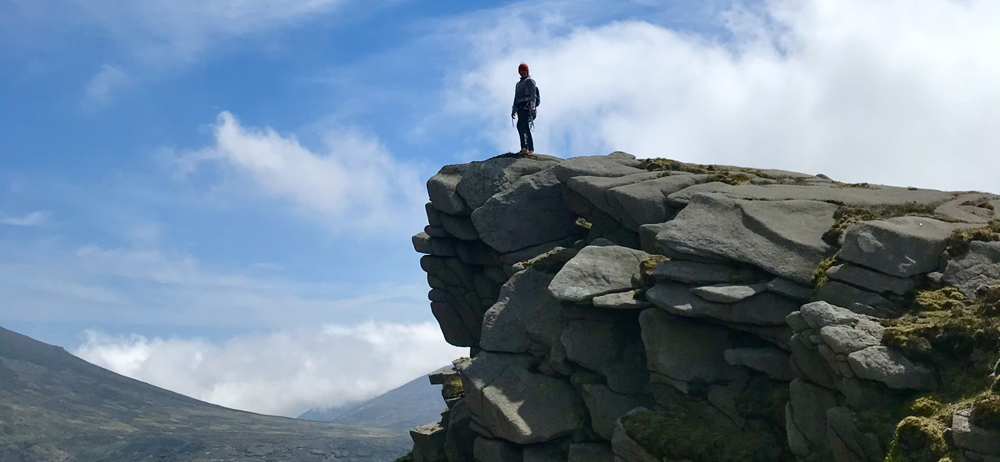
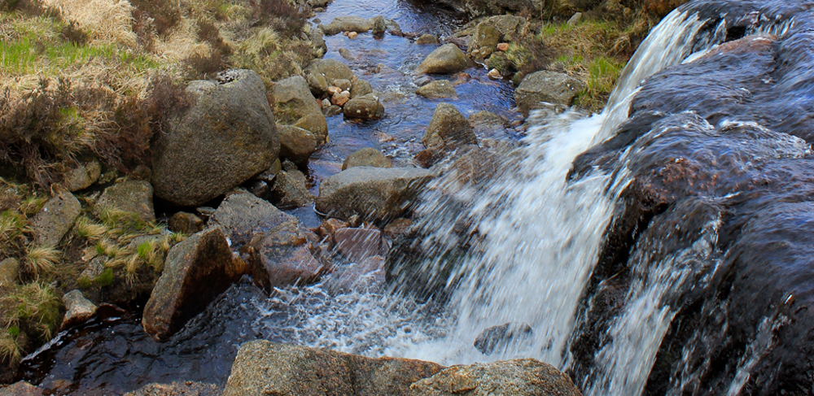
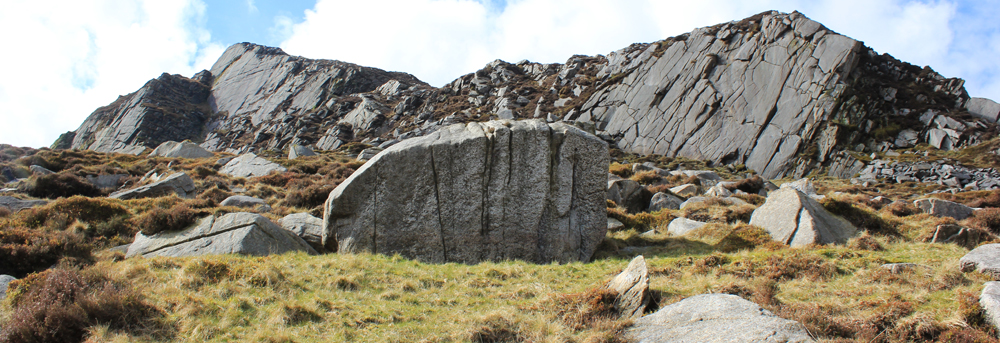
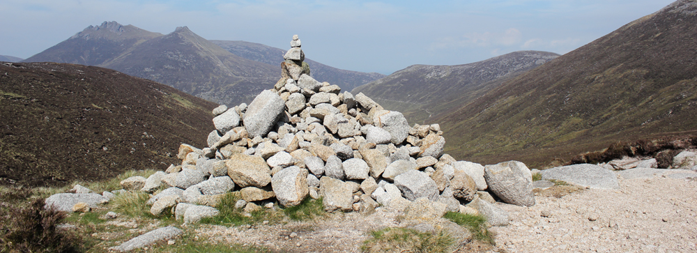

12 km Charity Walk
Discover Mourne Mountain beauty and support local rescue team!
Donate
Map
Schedule
Home
8th July 2023
Timetable
10:00 – 10:30
Bloody Bridge Car park – meeting point
10:30 – 13:30
Walk over the mountains
13:30 – 15:00
Meelmore Lodge lunch
How to go back to Bloody Bridge car park
Shuttle service is pre-booked with Peter Magowan on
+44(0)75 1641 2076
Would somebody be interested in walking back? Are you ready to walk 24 km?
Instruction
Please prebook your place in the charity walk and send an
email
to us.
What to wear – The walk is not difficult, however ankle support hikking shoes, long trousers and windproof jacket is recommended.
Watch the video of one windy day in the Mournes!!!
Please bring a flask of water and something to eat in your backpack.
Bring your rubbish back down with you!
Please send us an email to confirm how many people would like to walk.
Use the number
0044(0)76 5432 1089
for an urgent enquires.
GPS for Bloody Bridge car park: Latitude
54.174495 N
, Longitude
-5.873830 W
.
Mourne Mountains
   
Check the current weather:
Weather for the Following Location:
Northern Ireland map, United Kingdom
Home /
Schedule /
Map /
Donate
Contact and Booking - email us
©Jana.Robbins